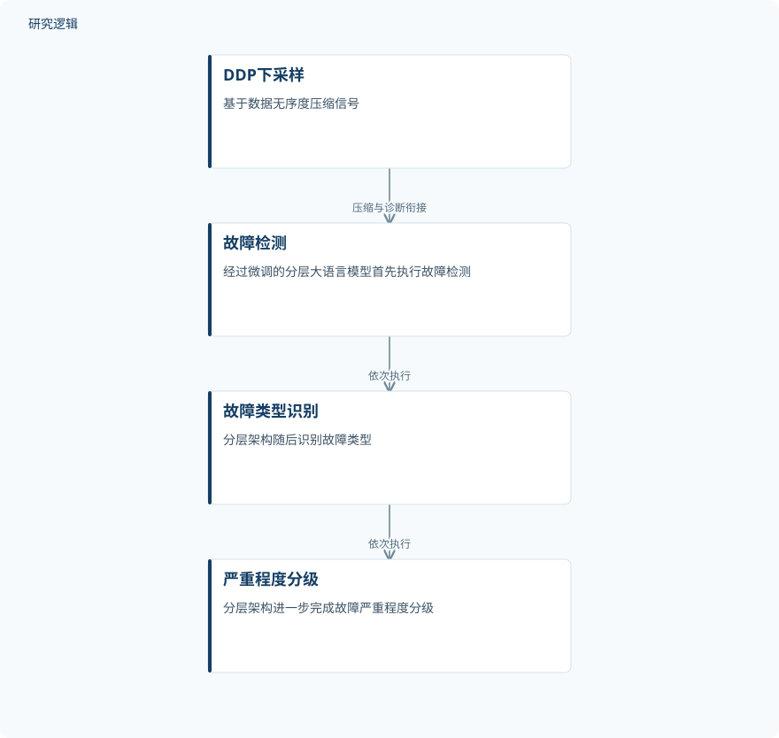

摘要解读
云边系统中基于大语言模型的锂离子电池故障诊断
Large language model-based fault diagnosis for lithium-ion batteries in cloud-edge systems
解读更新 2026-11-10 18:00 · 依据公开摘要整理，未核验全文细节
复杂工况下，锂离子电池的边缘端故障诊断如何兼顾准确性与效率？这项研究将信号压缩与分层大语言模型结合，探索云边协同诊断，值得关注的是其任务拆分方式与模型配置取舍。
文章目录
复杂工况推动电池诊断走向云边协同
反复发生的锂离子电池安全事件，使可靠性与稳健故障诊断成为重要问题。摘要指出，基于边缘端的方法在复杂条件下面临困难。研究因此提出利用大语言模型的云边框架，尝试回应这一诊断需求。
本文仅依据所提供的完整摘要解读，不代表已经阅读全文。阅读重点是：信号如何压缩、诊断任务如何分层，以及摘要所报告的性能究竟对应哪些任务。
从DDP信号压缩到分层诊断
方法包括基于数据无序度的下采样方法DDP，用于压缩信号；同时构建经过微调的分层大语言模型架构，依次完成故障检测、故障类型识别和严重程度分级。这三个环节构成递进的诊断过程，而非仅输出一个故障类别。
框架在五种电池的超过3,000个样本上评估，数据结合了实验室测量与真实储能场景数据。研究还比较了不同模型规模，以考察准确性与效率之间的取舍；摘要未展开具体微调方式及云端、边缘端的任务分配。
依据摘要整理的信号压缩与分层诊断示意


仅概括摘要明确陈述的信号压缩及顺序诊断关系，不表示具体云边部署位置，也不是论文原图。
下载 SVG图示关系说明
实线表示相邻阶段的信息流，虚线表示跨阶段联系或反馈。
DDP下采样 → 故障检测：压缩与诊断衔接；故障检测 → 故障类型识别：依次执行；故障类型识别 → 严重程度分级：依次执行
分类与分级表现，以及量化配置的取舍
在比较的模型规模中，作者将采用4-bit量化的7-billion-parameter模型确定为准确性与效率之间的最佳折中。这里的“最佳”应理解为本研究比较范围内的判断，而非适用于所有电池诊断场景的普遍结论。
该配置的故障分类准确率为99.2%，严重程度分级准确率为96.8%。作者还报告其显著优于传统方法。需要区分的是，这两项准确率分别对应分类和分级，不能据此补出故障检测环节的指标，也不能直接等同于实际安全风险的降低幅度。
样本构成、比较对象与验证边界仍待细读
摘要未报告样本的独立性、各类故障与电池的分布、训练测试划分，以及真实储能数据是否用于独立外部验证，因此尚不能判断对新电池或新工况的泛化范围。这些是当前资料无法核实的信息，并不表示论文没有开展相关工作。
同样，传统方法的具体名单、比较条件、显著性的判定方式，以及效率所对应的时延、资源占用或通信开销均未在摘要中展开。因此，当前可以确认作者报告的结果，但还不能完整评价优势的来源和部署代价。
阅读启发：关注压缩、分层与部署之间的联系
阅读启发：这项工作值得进一步追问的，不只是大语言模型能否识别故障，还包括DDP压缩后保留了哪些诊断信息，以及前序检测结果如何影响后续类型识别和严重程度分级。
建议后续阅读优先查看数据划分、分任务评价和效率指标，再判断其对智能运维的适用性。实验室测量与真实储能数据的结合提供了关注实际场景的理由，但不能仅凭摘要认定其已经具备普遍部署能力。
以上为本站阅读启发与建议，不是论文已验证的结论。